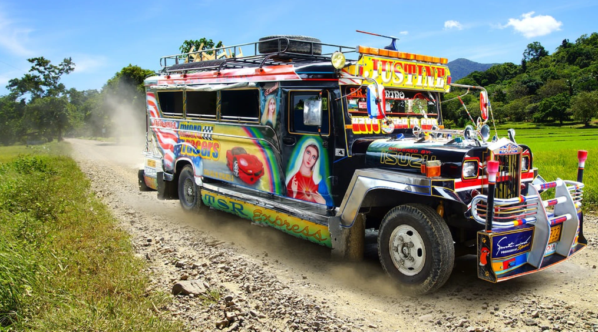

Tricyle or sometimes called as “trike” is a three-wheeled public utility vehicle consisting of a motorcycle and an attached passenger’s side car, inspired by the motorcycle used in www2. Tricycles have fixed routes and flexible routes where they can take you to your destination at the agreed price. These trikes are commonly found on suburban places except on major or main roads.